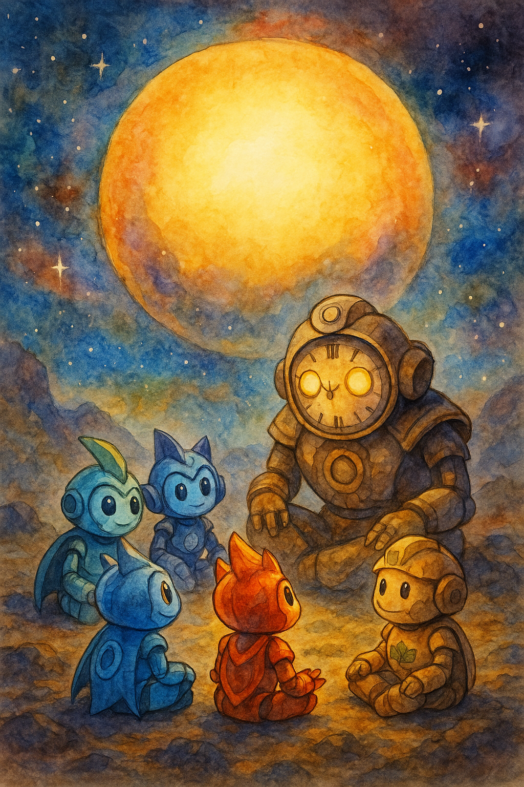

Когда «Искра» вышла из очередного гиперпрыжка, приборы впервые за долгое время не запищали тревожно. Космос был спокойным, если не считать одного — потоков времени, перекрученных, как ленты. Стрелки часов на экранах вращались то быстрее, то медленнее.
— Что это? — спросил Ветрос, пытаясь поймать поток ветра, который нёс с собой шёпот секунд. — Время играет?
Аквас провёл ладонью по панели, будто гладил водную поверхность. — Оно не играет. Оно запуталось. Мы близко к узлу, где минуты и годы переплелись.
Драгос хмыкнул. — Огонь живёт здесь и сейчас. Я не люблю, когда меня тянут назад или вперёд без спросу.
Террос, как всегда, молчал, но глаза его светились странным светом. Материос, всё ещё не привыкший к своей новой силе, тихо спросил: — А что, если за этим кто‑то стоит? Кто умеет управлять временем?
Планета
Сигнал шёл с планеты, окружённой кольцами сияющих часов. Они разного размера вращались в небе, отбрасывая на поверхность длинные тени. Океанов не было, но были равнины, покрытые зеркальными кристаллами, в которых отражались прошлое и будущее.
Приземлившись, био‑вотчкары ощутили странное ощущение: шаг сделан, а след от него появляется только через секунду; слова сказаны, а эхо запаздывает на два вдоха.
— Внимание, — прошептал Аквас. — Время не любит суеты. Будьте внимательны к каждому движению.
Эхо
На горизонте показались силуэты. Сначала друзья решили, что это тени, но, приблизившись, поняли: это они сами, только… чуть изменённые. Один Ветрос был старше, седой вихрь на его голове плотно прилегал к корпусу. Аквас увидел себя более тёмного, будто прошедшего через тысячи морей. Драгос столкнулся с юной копией себя — пламенный, но ещё не знающий, как управлять гневом.
— Это не иллюзия, — произнёс Террос. — Это эхо времени. Мы видим возможные варианты себя.
Материос посмотрел на светящийся силуэт, в котором угадывались все их очертания. — И это тоже мы?
— Это то, чем мы можем стать, — тихо ответил Аквас. — Или уже были.
Встреча
Из центра поля, где часы уходили под землю, поднялся гигант. Его корпус был округлым, вместо лица — циферблат, на котором не было цифр, только стрелки, вращающиеся в разные стороны. Взгляд его был тяжёлым, но тёплым.
— Я Хронос, — прогремел голос, будто одновременно звучащий и близко, и далеко. — Я храню течение времени в этой части вселенной.
Драгос сразу поднял руку. — Ты заигрался. Время творит хаос.
Хронос покачал головой. — Не я. Кто‑то нарушил одну из печатей, и время начало утекать. Я удерживаю, как могу, но мне нужен… ваш ритм.
Испытание
Хронос поднял руку, и пространство вокруг застыло. Друзья почувствовали, как минуты растягиваются, а затем сжимаются. Нужно было пройти сквозь кольцо часов, не ускоряя шаг и не останавливаясь. Если они спешили, время бросало их назад. Если медлили — вперёд.
Ветрос пытался подстроить ветер, но потоки сбивались. Драгос хотел пробить кольцо огнём — и сразу оказался у начала пути. Аквас попробовал течь, но застрял между секунд. Террос пошёл вперёд медленно, как камень, но стрелки обернулись против него.
Материос закрыл глаза. — Время — это не противник, — произнёс он. — Это рассказчик. Он говорит, если слушать.
Друзья выровняли дыхание, почувствовали ритм своих сердец. Они шли в такт, не быстрее и не медленнее. Кольца часов пропускали их, а стрелки замедлялись.
Объединение
Когда они прошли испытание, Хронос улыбнулся. — Теперь я вижу, что вы можете синхронизироваться не только друг с другом, но и со временем. Помогите мне закрыть прореху.
Био‑вотчкары встали кругом. Аквас потянулся к воде, которой тут не было, но нашёл её в каплях росы. Ветрос поймал тихий ветер, который шептал между минутами. Драгос согрел воздух светлым пламенем, которое не жгло, а освещало. Террос поставил ноги на землю и почувствовал ритм планеты. Материос связал их силы тонкими нитями материи.
Сверху спустился луч света, похожий на маятник. Все пять энергий соединились, и мир озарила вспышка. Время перестало скакать, часы на небе замедлились и стали вращаться равномерно.
Последствие
Хронос опустил стрелки. — Спасибо, — произнёс он, и в голосе его было облегчение. — Время снова течёт ровно. Но помните: оно не любит, когда его торопят или оскорбляют. Будущее приходит только тогда, когда мы готовы слышать прошлое.
Ветрос кивнул. — Значит, иногда нужно остановиться и услышать, что говорит тишина.
Драгос усмехнулся. — А иногда — не торопить пламя. Пусть горит ровно.
Аквас улыбнулся. — И помнить, что каждое мгновение — как капля: если спешить, она разобьётся, если задержать — высохнет.
Материос посмотрел на друзей. — Я буду учиться терпению вместе с вами.
Они вернулись на «Искру». Время снова стало их союзником, а не врагом. И где‑то далеко Хронос смотрел им вслед, зная, что они всегда придут на помощь, если часы вновь собьются.
📜 Урок
Друзья поняли: иногда самый важный шаг — это остановиться и послушать. Время ценит терпеливых и тех, кто уважает прошлое, чтобы построить будущее.